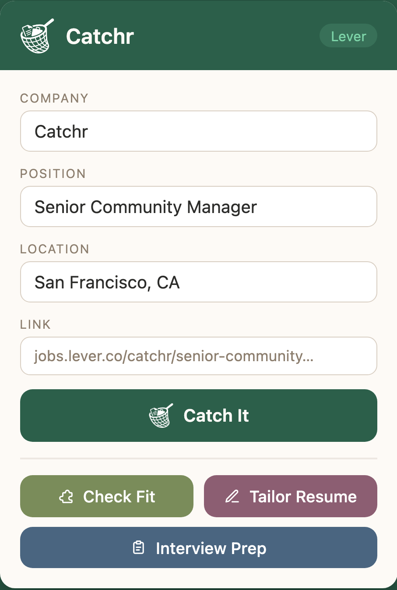
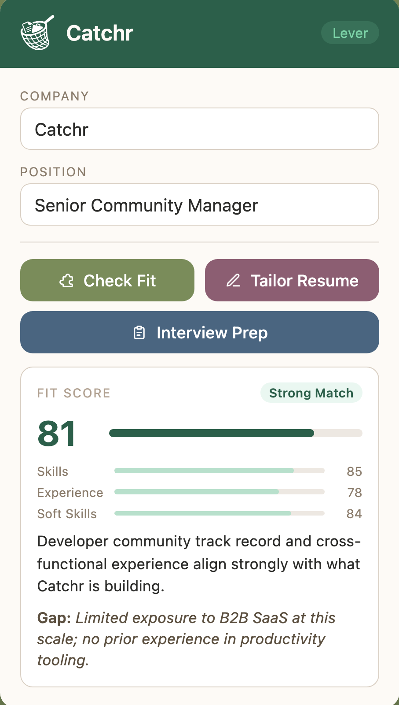
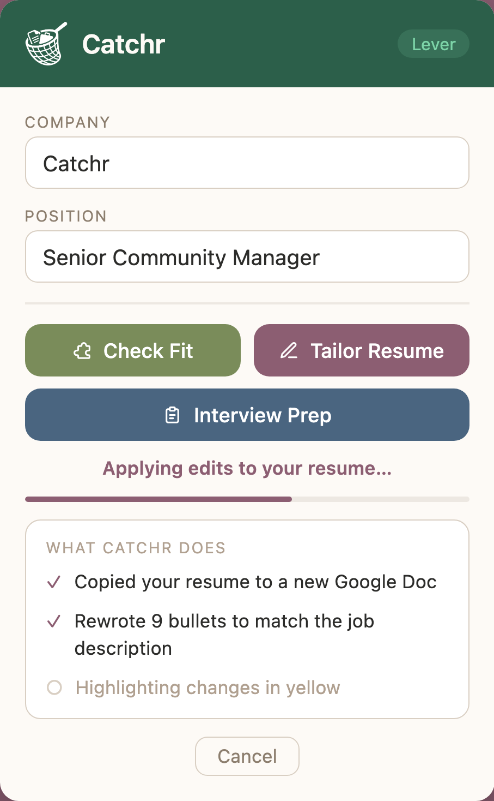
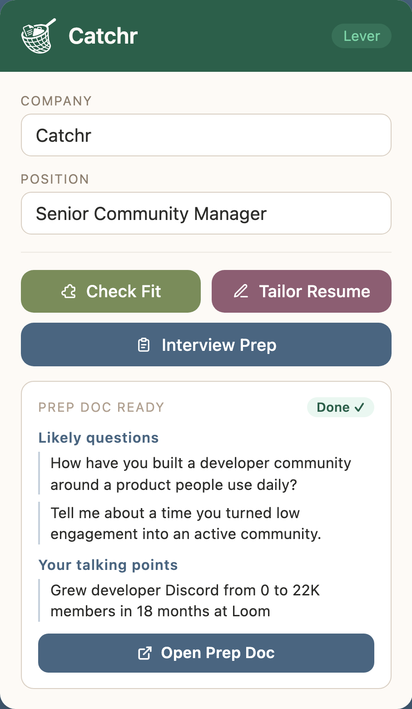
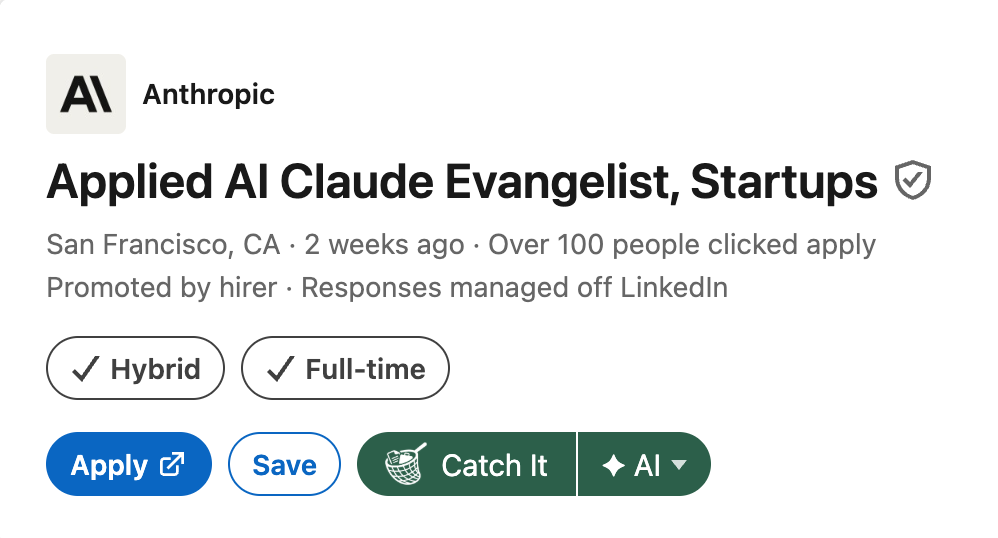

Catchr for Chrome
Catchr tracks every job you're watching, then puts AI to work on each one: scoring your fit, tailoring your resume to the role, and getting your interview answers ready, all from your browser for free.

The AI copilot
One click catches a listing and logs it to your tracker. Then three tools take over: telling you whether to apply, how to tailor your resume for the role, and what to say when you walk in the room, all on your own free Gemini key, which is why Catchr costs nothing.
Every application goes better when you know where you stand. Catchr scores your background against the job description across skills, experience, and soft skills, so you can apply with clarity instead of hope.

Catchr copies your Google Doc resume, rewrites the bullets to match the job description, and highlights every change in yellow so you decide what stays.
AI can make mistakes. Always review your tailored resume before sending.

Catchr builds a full interview prep doc from your resume and the job description: a company overview, your strongest talking points, STAR stories to prep, and sharp questions to ask, all saved to your Google Drive.

On the page, not in the way
Catchr also puts Check Fit, Tailor Resume, and Interview Prep directly on the listing you're reading, so you can run any tool without opening the popup or leaving the page.

Track every application
Catchr creates a single Google Sheet for your search and fills it in every time you hit Catch It, tracking each role you apply to, with space to update the status as you move through the process. Flip to the Dashboard tab and Catchr has already done the math: total applications, response and interview rates, weekly momentum, and insights like your best day to apply, all kept up to date automatically.
| Company | Role | Status |
|---|---|---|
| Linear | Sr. Community Manager | Interviewing |
| Notion | Product Marketing Lead | Offer |
| Figma | Developer Advocate | Applied |
| Ramp | Lifecycle Marketing | Rejected |
Flip to the Dashboard tab and Catchr has already done the math:
How it works
Install Catchr, connect your Google account, and paste in a free Gemini API key from Google. You only need to do this once.
See a role on LinkedIn, Greenhouse, Lever, or anywhere else. Click Catchr and the job lands in your tracker instantly, without leaving the page.
Check your fit score, tailor your resume to the role, or generate a full interview prep doc. Each tool runs in seconds and saves to Drive.
Your data, your drive
Everything Catchr creates, from caught jobs to tailored resumes and prep docs, lives in your Google Sheet and Google Drive. The AI runs on your own Gemini API key, so requests go straight from your browser to Google and nothing is stored anywhere outside your own account. Your resume, the jobs you're eyeing, and everything Catchr generates stay between you and your own Google account.
Caught jobs, tailored resumes and prep docs are written straight to your own Google account.
Catchr doesn't keep a copy of your resume or your history. No shadow database.
Your data is never sold, shared, or used to train models. Full stop.
It's all in files you own, so revoke access or clear it whenever you like.
AI requests go directly from your browser to Google using your own API key, so your resume and results are never stored outside your own Google account.
Go in knowing your fit, with a resume that speaks to the job, and your answers ready before they ask.
Free forever · Bring your own Gemini API key · Works on every major job board